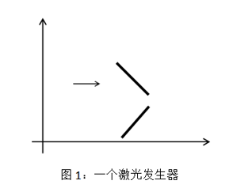
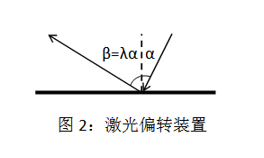
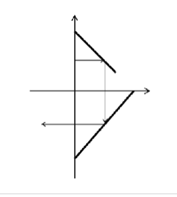

曾经发明了超能粒子炮・改的发明家 SHTSC 又公开了他的新发明：激光发生器——一种可以产生高能激光的神秘装置。
激光发生器从正上方看是一个无穷大的平面，里面由一个定向激光发射装置和若干个激光偏转装置组成。一个激光发生器的示例如图所示，细箭头表示定向激光发射装置，粗线段表示激光偏转装置。

由定向激光发射装置发射出的激光可以看成是一条射线，如果遇到激光偏转装置就会发生偏转。奇特的是，SHTSC 所使用的激光偏转装置并非像传统的镜子那样遵循反射定律，而是对于每个激光偏转装置，有一个固定的偏转系数 $\lambda$，其出射角 $\beta$ 与入射角 $\alpha$ 的关系为 $\beta = \lambda \alpha$，并且能在这一过程中增强激光的能量。

注意：
现在 SHTSC 希望你模拟他所设计的激光发生器的工作过程，来帮助他计算激光究竟被哪些激光偏转装置所偏转。
第一行四个整数 $x$，$y$，$d_x$，$d_y$，表示定向激光发射装置的位置是 $(x, y)$，方向是 $(d_x, d_y)$。
第二行一个整数 $n$，表示一共有 $n$ 个激光偏转装置。
以下 $n$ 行，每行五个整数 $x_1$，$y_1$，$x_2$，$y_2$，$a$，$b$，表示一个激光偏转装置是 $(x_1, y_1)$ 到 $(x_2, y_2)$ 的一条线段，其偏转系数 $\lambda = \frac a b$。
一行由空格隔开的若干个整数，表示激光依次照射到的激光偏转装置的编号（按照输入顺序从 $1$ 到 $n$ 编号）。如果激光被偏转超过 $10$ 次，则只需输出前 $10$ 次所照射到的偏转装置的编号。特别地，如果激光没有被任何一个偏转装置所偏转，输出NONE。
NONE
0 2 1 0 2 0 4 3 1 1 1 4 0 0 -4 1 1
1 2
【样例解释】
如图所示，激光依次被 $1$ 号和 $2$ 号偏转装置偏转。

【数据规模与约定】
对于 $10\%$ 的数据，$n = 1$；
对于 $40\%$ 的数据，$a = b = 1$；
对于 $100\%$ 的数据，$n \leq 100$，所有坐标与 $a$ 和 $b$ 的绝对值不超过 $1000$，$a$、$b$ 均非零，$d_x$、$d_y$ 不同时为零。保证所有的偏转装置没有交点，且激光发射起始点不在任何偏转装置上。
 Comet OJ
Comet OJ